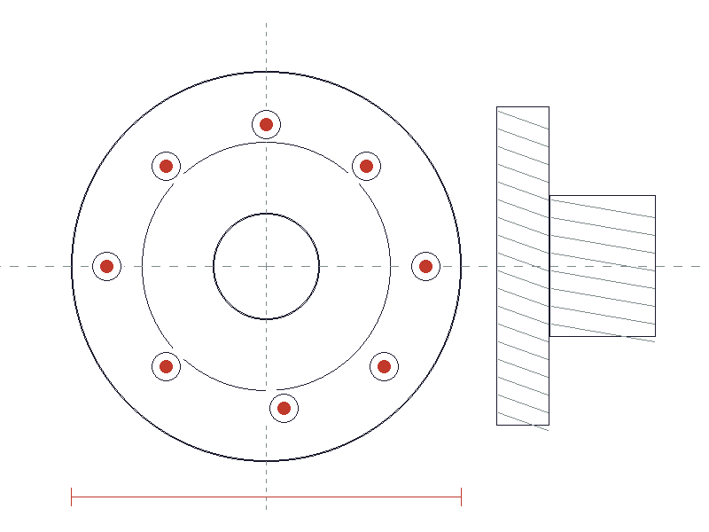
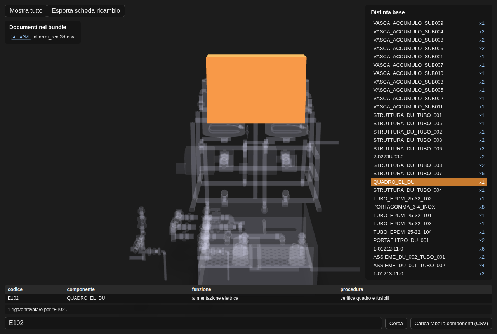
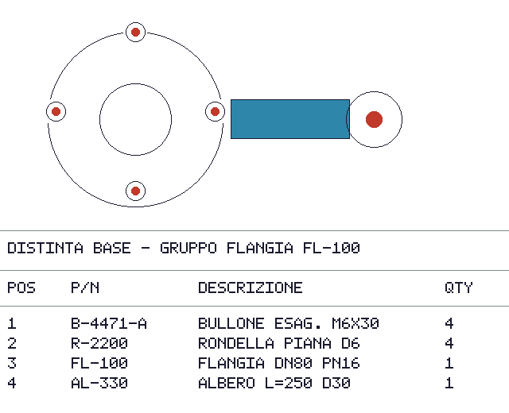
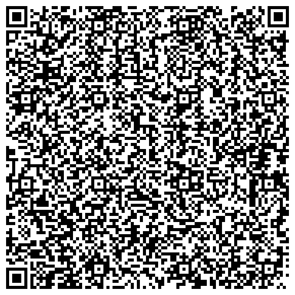

Il tuo esploso CAD e la distinta base stanno in un QR, senza rete.
balzar non salva l'immagine del tuo schema tecnico: salva il programma che la rigenera — rettangoli, cerchi, testo, poche centinaia di byte. Un'etichetta fotografata in officina rigenera l'esploso e la distinta base pixel per pixel, senza rete, senza viewer 3D, senza licenza CAD.
Motore deterministico in Python puro, zero dipendenze. Su foto e rumore lo dichiara onestamente invece di fingere una compressione che non c'è.


A01 nella tabella allarmi → i 4 bulloni si isolano nel
modello, la riga giusta della distinta base si evidenzia da solaClicca un componente, trova un allarme — offline
Dopo lo scan il viewer non è solo un modello 3D che gira: è uno
strumento di ricerca. Un operatore che legge un codice sul quadro comandi lo digita (o
lo passa via URL, ?q=A01, zero digitazione) e il componente giusto si
isola da solo, ovunque sia annidato nell'assieme.
-
Isolamento con un clickclicca una parte nel modello: si accende, tutte le altre si attenuano — anche dentro un sotto-assieme profondo
-
Ricerca libera, qualunque colonnanome componente, codice allarme, o qualunque altro campo di una tabella caricata — colonne a piacere, rilevate automaticamente
-
Distinta base collegatala riga giusta si seleziona da sola, con il conteggio reale dei posizionamenti nell'assieme
-
Zero rete, zero licenza CADgira interamente nel browser — nessun upload dopo lo scan iniziale, nessun software da installare in officina
In officina, il disegno non arriva mai quando serve
Il reparto produttivo raramente ha un viewer 3D o una licenza CAD accanto alla macchina. La manutenzione sul campo — stabulari sotterranei, navi, cantieri — spesso non ha rete.
- ✕Una pila di PDF disordinati su una chiavetta USB, mai la revisione giusta a portata di mano.
- ✕Un file CAD nativo che nessuno, sul campo, ha il software per aprire.
- ✕Un export immagine dello stesso schema che pesa troppo per stare in un QR o su un'etichetta.
- ✓Un'etichetta con un QR rigenera esploso e distinta base al volo — nessun software installato, nessuna rete, nessuna licenza.
Precondizione onesta
Funziona quando il disegno è esportabile in pulito da CAD (SVG/DXF) o scritto come
programma a mano — un cerchio del sorgente diventa CIRCLE, mai un pixel
di mezzo. Uno screenshot o una foto del disegno restano possibili ma rendono peggio:
è lo stesso limite dichiarato più sotto, non nascosto.
Cosa vedi dopo lo scan
Rotazione/zoom del 3D, click su un componente per isolarlo, ricerca per nome o per codice allarme, distinta base, documenti collegati — tutto offline, nella stessa pagina che il QR apre.
Non un compressore: un generatore
Un PNG o uno ZIP contengono i dati già pronti, solo ricodificati in modo più compatto. balzar salva le istruzioni per produrli — l'immagine non esiste finché qualcuno non esegue il programma.
-
1
Seed + programma
Poche centinaia di byte:
CIRCLE cx=170 cy=150 r=110,TEXT x=90 y=400 text="B-4471-A"— scritto a mano o estratto automaticamente da un'immagine, un SVG/DXF, o una sequenza di file CAD. -
2
Interprete deterministico
Nessun numero casuale "vero" (PRNG proprio, seed esplicito), nessuna libreria esterna nel percorso che conta. Stesso payload, stessi pixel, su ogni piattaforma.
-
3
Output rigenerato
L'immagine (o la sequenza di frame, o l'assieme 3D) completa — calcolata ogni volta da zero, mai stata su disco come pixel prima di questo momento.
È la differenza tra un file audio compresso e uno spartito: lo spartito non contiene il suono, contiene le istruzioni per produrlo ogni volta che qualcuno lo suona. — lo stesso principio, applicato a immagini, esplosi CAD e distinte base
Un caso reale, misurato — non stimato
examples/etichetta_bom.bzr: esploso di un gruppo
flangia con distinta base incorporata (BOM). Stesso identico contenuto, quattro
rappresentazioni, un solo confronto che conta davvero: sta in un QR o no.


l'immagine a sinistra
| Rappresentazione | Byte | Sta in un QR? (limite 2.953 B) |
|---|---|---|
| RGB grezzo (640×520, non compresso) | 998.400 | no — 339× oltre |
| PNG dello stesso contenuto | 5.496 | no — 1,9× oltre |
| ZIP del PNG | 4.969 | no — 1,7× oltre |
| Payload balzar (.bzp) | 559 | sì — margine ampio (19% della capacità) |
| Altri esempi inclusi nel progetto | Payload | Output rigenerato | Espansione |
|---|---|---|---|
| Pattern geometrico ripetuto | 276 B | 1024×1024 px | ~11.400× |
| Sequenza CAD, 3 file DXF (assemblaggio a step) | 169 B | 3 frame 800×800 px | ~34.000× |
| Esploso automatico per layer, 6 componenti | 303 B | 7 frame 800×800 px | ~44.000× |
| GIF con contenuto in movimento, 30 frame | 8.144 B | 320×240×30 frame | 849× |
Il limite è reale, e lo dichiariamo — non lo nascondiamo
Il principio ha un nome preciso: complessità di Kolmogorov. Contenuto strutturato (CAD, pattern, icone, schemi tecnici) si descrive con poche istruzioni — il guadagno è di ordini di grandezza. Contenuto casuale o fotografico non ha una descrizione più corta dei suoi stessi pixel: nessun algoritmo, balzar incluso, può comprimerlo davvero.
Quando succede, l'encoder lo dichiara nel risultato invece di fingere un guadagno che non c'è:
rumore puro 800×800 → payload più grande dell'RGB equivalente (0,7×, nessun guadagno)È un requisito di prodotto, non un dettaglio tecnico — è quello che distingue balzar da un tool di compressione bugiardo. Confronto completo con JPEG/PNG/ZIP/MP3 →
Due prodotti, un solo motore
Balzar Studio crea il payload da un file sorgente. Balzar Live lo apre e lo consulta — nessun encoder coinvolto, funziona anche da un QR fotografato sul campo.
Dal file sorgente al payload
CLI, app desktop e demo web. Chi prepara il contenuto tecnico: uffici disegno, chi cura manuali e distinte base.
- Ingestione diretta di SVG/DXF/3DXML — nessun pixel di mezzo
- Encoder raster per immagini/screenshot, con fedeltà dichiarata onestamente
- Sequenze multi-file ed esploso automatico per layer
- Export QR — immagine singola, griglia o sequenza fotografabile
Dal QR/file alla vista
Il lato che un tecnico o un operatore usa davvero in officina o sul campo — offline, nessuna licenza CAD.
- Rotazione, zoom, click su un componente per isolarlo
- Ricerca per nome componente o codice allarme
- Distinta base e documenti/procedure collegati
- Acquisizione continua da fotocamera, zero tocchi dell'operatore
Dove ha senso — e dove no
balzar vince dove il contenuto è strutturato e ripetitivo, non dove è percettivo o già ottimizzato da un codec maturo (foto, audio, video reale).
Manuali tecnici, ricambi ed esplosi/BOM
Il caso guida del progetto: officina e manutenzione sul campo, dove il viewer 3D e la rete spesso non ci sono. Un'etichetta sostituisce la pila di PDF disordinati.
Caso principaleAsset per firmware/embedded
Icone, boot animation, sprite UI come programma invece di bitmap in flash — il decoder è stdlib pura apposta per questo.
Distribuzione offline
In zone a bassa connettività, una pagina di QR fotografata in un colpo solo consegna diagrammi e animazioni senza rete dati.
Asset procedurali per giochi/app
Tileset, pattern UI, sprite animati generati a runtime da un seed invece che scaricati come bitmap.
Branding fisico generativo
QR su packaging che rigenerano un pattern di brand animato — il valore è il gesto, non la percentuale di compressione.
Provalo sui tuoi file
Carica un'immagine, un SVG/DXF o un assieme 3DXML nella demo web — vedi il payload rigenerarsi in tempo reale, con le statistiche oneste incluse.